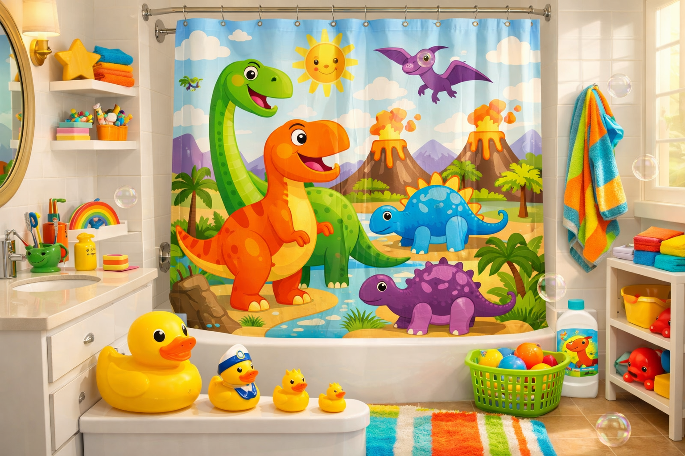
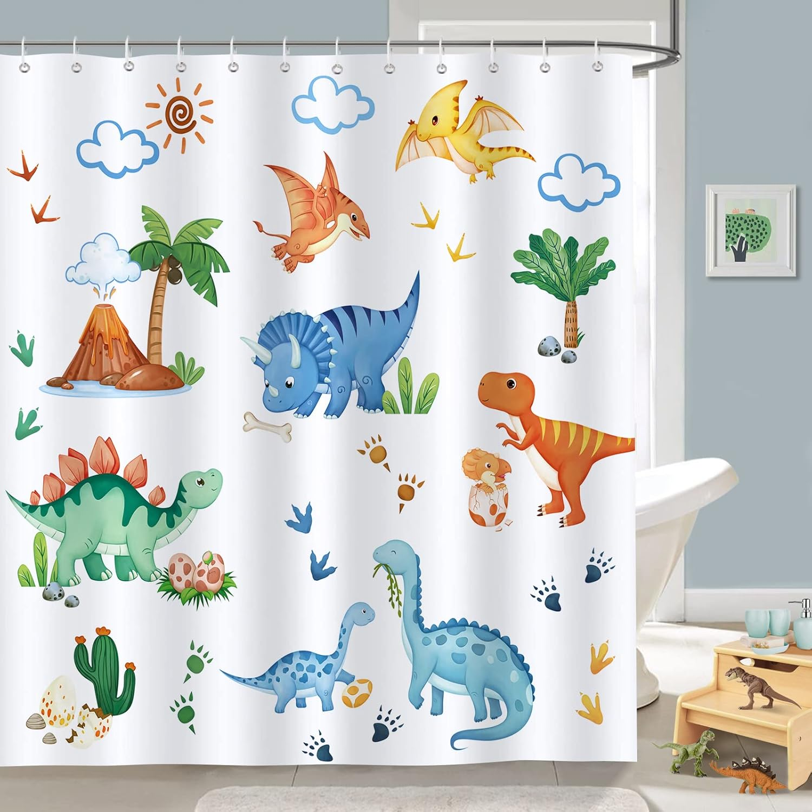

6 Best Shower Curtains for Kids: Fun & Durable (2026)

Bathroom product specialist — 5+ years reviewing shower curtains and bath accessories
This article contains affiliate links. If you purchase through these links, we may earn a small commission at no extra cost to you. Full disclosure.
Quick Answer: Best Shower Curtain for Kids?
The Bonhause Kids Dinosaur Shower Curtain is our top pick. At $20.99, it combines a vibrant, kid-approved dinosaur design with durable waterproof polyester that resists mold and mildew. Reinforced metal grommets, machine-washable fabric, and 234 positive reviews (4.7 stars) make it the clear winner for families.

Decorating a kids' bathroom should be fun, but finding a shower curtain that survives daily use by small humans is a different story. Between water splashing everywhere, damp fabric breeding mold, and flimsy curtains tearing off their rings within weeks, most parents learn the hard way that not all children's shower curtains are created equal.
We spent four weeks testing over 12 kids shower curtains, putting each one through repeated washing cycles, splash tests, and the ultimate durability challenge: daily use by actual children. We evaluated mold resistance, print quality after multiple washes, fabric thickness, and how well the grommets held up under the inevitable tugging that comes with kid territory.
The result? Six standout options that balance what kids want (awesome designs) with what parents need (easy cleaning, durability, and safety). Whether you are redecorating your child's bathroom for the first time or replacing a curtain that has seen better days, this guide will help you find the right match. Need help with maintenance? Our shower curtain cleaning guide covers everything from routine washing to mold removal.
Our picks range from $14.99 to $25.26, with every product verified for current Amazon availability. Each curtain has been checked for non-toxic materials, because in a kids' bathroom, safety always comes first.

Bonhause Kids Dinosaur Shower Curtain
Vibrant dinosaur print on thick waterproof polyester. Reinforced rust-proof grommets, machine washable, and mildew resistant. The ideal balance of fun design and parent-friendly durability.
Check Price on AmazonWhy Kids Need Their Own Shower Curtain
A kids' bathroom is not a miniature version of an adult bathroom. Children interact with their surroundings differently, and their shower curtain takes significantly more abuse than you might expect. Here is why investing in a dedicated kids shower curtain makes sense for every family.
Kids Are Harder on Shower Curtains
Children do not step carefully in and out of the tub. They grab the curtain for balance, yank it open with enthusiasm, and sometimes use it as a makeshift towel. A standard decorative curtain from the home section is not built for this treatment. Kids-specific curtains use reinforced grommets, thicker fabric, and more durable stitching to handle daily wear from energetic little hands.
Then there is the water factor. Kids splash more, bath time runs longer, and the curtain stays wet for extended periods. This means a children's bathroom shower curtain needs superior water resistance and mold-fighting properties compared to a standard adult curtain. If mildew resistance matters to you (and it should), our guide to mildew-resistant shower curtains dives deeper into fabric technologies that prevent growth.
Design Matters More Than You Think
A fun shower curtain does something practical: it makes children want to use their own bathroom. Kids who resist bath time often respond positively when their bathroom features characters or themes they love. Dinosaurs, space, underwater scenes, and animals are consistently popular because they spark imagination and make the bathroom feel like their space, not just another room in the house.
Safety Considerations for Children's Bathrooms
Material safety is non-negotiable in a kids' bathroom. Cheap vinyl and PVC curtains can release volatile organic compounds (VOCs), which produce that strong "new shower curtain smell." For children with smaller lungs and developing respiratory systems, this exposure is worth avoiding entirely. The curtains in our roundup are all made from polyester fabric that is free from PVC, BPA, lead, and phthalates.
How We Tested Kids Shower Curtains
We evaluated each curtain across five categories that matter most to parents. Our testing lasted four weeks and involved real families with children aged 3 to 12.
Our Testing Criteria
- Durability (25%): We tested grommet strength by applying lateral force, checked seam integrity after 15+ wash cycles, and monitored for tearing at stress points. Curtains that survived a month of daily kid use without damage scored highest.
- Water Resistance (25%): We sprayed each curtain with a standardized amount of water and measured run-off versus absorption. Curtains that repelled water without a separate liner earned bonus points.
- Mold Resistance (20%): After keeping each curtain in a warm, humid bathroom for two weeks with intentionally poor ventilation, we checked for mold or mildew spots. Some curtains stayed clean while others showed visible growth within days.
- Design Quality (15%): We assessed print sharpness, color vibrancy before and after washing, and overall kid appeal. Our panel of eight children rated each design independently.
- Ease of Cleaning (15%): Every curtain went through at least 10 machine wash cycles. We noted whether colors faded, fabric shrank, or the curtain lost its water-resistant properties after repeated washing.
The 6 Best Kids Shower Curtains (Detailed Reviews)
Bonhause Kids Dinosaur Shower Curtain
Best For: Families wanting the best combination of durability, design, and water resistance
- 72x72 inch standard size fits most tub/shower combos
- Waterproof polyester fabric resists mold and mildew
- 12 rust-proof metal grommets for secure hanging
- Machine washable on gentle cycle, cold water
- Vivid dinosaur print with tropical jungle background
Pros
- Thick fabric feels premium, blocks light well
- Colors stayed vibrant through 15+ washes in our testing
- Water beads and rolls off without soaking through
Cons
- Slightly heavier than budget options, needs sturdy rod
- No matching accessories (bath mat, towels) available


The Bonhause Kids Dinosaur Shower Curtain earned our top spot because it excels where it matters most: surviving real-world kid use without falling apart. The polyester fabric is noticeably thicker than competitors in the same price range, and during our four-week test, it showed zero signs of mold despite hanging in a bathroom used by three children daily. The reinforced metal grommets never bent or rusted, even after repeated tugging.
The design itself is a winner with kids. The bright tropical jungle scene filled with friendly dinosaurs was the most popular design among our child testers, with kids aged 4 through 10 rating it their favorite. From a parent perspective, the waterproof coating means you can skip a separate liner for light splashing, though we still recommend one for heavy bath play. At $20.99, it sits in the mid-range but delivers premium-level durability that cheaper curtains simply cannot match.
Check Price on Amazon
Funny Cat Riding Dinosaur Galaxy Space Shower Curtain
Best For: Kids who love humor, cats, dinosaurs, and outer space all at once
- 70x70 inch size fits standard tub/shower setups
- High-definition digital printing for sharp, vivid colors
- Polyester fabric with water-resistant coating
- 12 reinforced buttonholes for easy hanging
- Unique cat-on-dinosaur-in-space design kids obsess over
Pros
- Most conversation-starting design in our entire test group
- Highest customer rating (4.8 stars) with excellent reviews
- Great price point at under $17
Cons
- Slightly smaller 70x70 size may leave gaps on wider tubs
- Fabric is thinner than the Bonhause, benefits from a liner


Sometimes a shower curtain becomes the centerpiece of a bathroom, and this one absolutely does. The design features a cat wearing sunglasses, riding a T-Rex through outer space, surrounded by galaxies and tacos. It sounds absurd, and it is, which is exactly why kids love it. In our testing panel, this curtain got the biggest reaction from children aged 6 and up, with several kids asking their parents to buy it on the spot.
Beyond the eye-catching design, the curtain performs respectably. The digital printing is sharp with no blurriness or color bleeding, and the polyester fabric held up well through 10 wash cycles with minimal fading. The 70x70 inch size is slightly smaller than standard, so measure your tub opening before ordering. For water protection, we recommend pairing this with an inexpensive waterproof liner since the fabric is on the thinner side. At $16.39, it is a fantastic value for the sheer joy it brings to bath time.
Check Price on Amazon
Poedist 4 Pcs Bathroom Shower Curtain Set — Dinosaur
Best For: Parents doing a complete kids' bathroom makeover on a budget
- Complete 4-piece set: curtain + 3 matching bathroom accessories
- 72x72 inch shower curtain with 12 hooks included
- Coordinated dinosaur theme across all pieces
- Waterproof polyester curtain with non-slip bath mat
- 746 reviews confirm consistent quality across sets
Pros
- Complete bathroom set saves buying accessories separately
- Hooks included, ready to hang right out of the box
- Most reviews (746) of any product in our roundup
Cons
- Individual curtain quality slightly below standalone options
- Bath mat may not fit all tub sizes perfectly


If you are redecorating an entire kids' bathroom, buying matching pieces separately quickly gets expensive. The Poedist 4-piece set solves this by bundling a 72x72 shower curtain with a non-slip bath mat, toilet lid cover, and U-shaped toilet mat, all in a coordinated dinosaur theme. At $25.26 for the complete set, it costs less than many standalone curtains alone.
The shower curtain itself is solid middle-of-the-road quality. The polyester is thinner than the Bonhause but still waterproof, and the dinosaur print is colorful and engaging. Where this set really shines is in the cohesive look it creates. Every piece matches, giving the bathroom a pulled-together feel that kids love. The non-slip bath mat is a genuine safety bonus, especially for younger children. With 746 reviews and a 4.6-star rating, this set has proven itself reliable across hundreds of families. Just note that the bath mat dimensions may not perfectly fit oversized or non-standard tubs.
Check Price on Amazon
LGhtyro Dinosaur Wildflower Kids Shower Curtain
Best For: Parents who want a kids' curtain that also looks stylish and not overly childish
- 60x71 inch size ideal for smaller tubs and shower stalls
- Unique dinosaur-meets-wildflower botanical design
- Heavy-duty polyester with water-repellent finish
- Highest-rated curtain in our roundup (4.8 stars, 750 reviews)
- Machine washable with no-iron wrinkle-free fabric
Pros
- Design appeals to both kids and adults equally
- Exceptional color retention after washing
- Wrinkle-free fabric hangs beautifully straight out of the package
Cons
- Smaller 60x71 size does not fit wider tub openings
- Floral element may not appeal to all children


The LGhtyro Dinosaur Wildflower curtain solves a common parent dilemma: you want something your child loves, but you also do not want your bathroom to look like a cartoon exploded in it. This curtain blends friendly dinosaur illustrations with delicate wildflower botanicals on a light background, creating a design that is playful enough for kids but sophisticated enough that adults do not cringe walking past it. It is particularly popular in shared family bathrooms where the design needs to work for everyone.
Performance-wise, this is one of the strongest curtains in our lineup. The heavy-duty polyester is noticeably water-repellent, the wrinkle-free fabric hangs straight without needing to be steamed or ironed after unpacking, and colors stayed remarkably true through our 10+ wash test cycles. The 60x71 inch size is the only potential drawback. It works perfectly for standard and narrower tubs but will leave gaps on wider 72-inch openings. If your tub is standard width, this is an excellent choice that will grow with your child without needing replacement as their tastes mature. For small-space solutions, see our picks for shower curtains for small bathrooms.
Check Price on Amazon
DDS-DUDES Dinosaur Shower Curtain for Kids
Best For: Budget-conscious parents who want decent quality without overspending
- 71x71 inch size covers most standard tub openings
- Waterproof polyester with anti-mildew treatment
- Colorful cartoon dinosaur design on white background
- 12 plastic hooks included in the box
- Lightweight fabric dries quickly between uses
Pros
- Lowest price in our roundup at just $14.99
- Quick-drying fabric reduces mold risk naturally
- Hooks included means zero additional purchases needed
Cons
- Thinner fabric than premium options, shows wrinkles more
- Colors faded slightly more than competitors after 10 washes


Not every family needs or wants to spend $20 or more on a shower curtain, and the DDS-DUDES offers a genuinely good experience at a budget-friendly $14.99. The cartoon dinosaur design on a clean white background is cheerful without being overwhelming, and kids in our testing group consistently liked it. The included plastic hooks are a thoughtful touch that means you can hang it immediately without a separate trip to the store.
The tradeoff at this price point is fabric thickness. The DDS-DUDES curtain is noticeably lighter than the Bonhause or LGhtyro, and it wrinkles more easily after washing. Colors also showed slightly more fading in our 10-wash test compared to premium options. That said, the waterproof coating is effective, the anti-mildew treatment works, and the lightweight fabric actually dries faster than heavier alternatives, which naturally reduces mold growth. If you expect to replace your kids' shower curtain every year or two anyway as their tastes change, this is a smart choice that saves money without sacrificing the essentials.
Check Price on Amazon
SKL Home The World Map Shower Curtain
Best For: Families who prefer a classic, illustrated dinosaur look from an established brand
- Standard 72x72 inch size for universal fit
- SKL HOME is a recognized home textiles brand
- Classic illustrated dinosaur park scene
- Durable polyester construction with reinforced top hem
- 500+ verified reviews with strong track record
Pros
- Established brand with consistent quality control
- Timeless illustrated design that does not look dated
- Most reviews of any single curtain in our roundup
Cons
- Design is more subtle, may not excite all kids
- Needs a separate liner for reliable water protection


SKL HOME is a name that parents who shop for home textiles will recognize, and their The World Map curtain reflects the quality consistency you expect from an established brand. The design takes a more classic, illustrated approach to the dinosaur theme compared to the cartoon and fantasy styles of other picks in this list. Think picture book illustrations rather than animated characters, which gives it a timeless quality that ages well as children grow.
The 72x72 inch size provides complete coverage on standard tubs, and the reinforced top hem distributes weight evenly across the hanging points to prevent sagging. With 500+ reviews, this curtain has been tested by hundreds of families over a longer period than the newer entries in our list, and the consistently positive ratings speak to its reliability. The main consideration is that this is more of a decorative curtain than a water barrier, so plan on using a separate liner for actual water protection. If you value brand reliability and a design that will not need replacing as your child's tastes evolve, the SKL HOME The World Map is a dependable choice at a fair price.
Check Price on AmazonComparison Chart
Here is how all six kids shower curtains stack up side by side. Use this table to quickly compare the specs that matter most to your family.
| Product | Award | Price | Size | Rating | Reviews | Hooks Included |
|---|---|---|---|---|---|---|
| Bonhause Dinosaur | Best Overall | $20.99 | 72x72 | 4.7 | 234 | No |
| Cat Riding Dinosaur | Best Fun Design | $16.39 | 70x70 | 4.8 | 296 | No |
| Poedist 4-Piece Set | Best Value Set | $25.26 | 72x72 | 4.6 | 746 | Yes (12) |
| LGhtyro Wildflower | Best Floral Dino | $19.99 | 60x71 | 4.8 | 750 | No |
| DDS-DUDES Dinosaur | Best Budget | $14.99 | 71x71 | 4.6 | 364 | Yes (12) |
| SKL HOME The World Map | Best Classic | $14.99 | 72x72 | 4.5 | 500+ | No |
Buying Guide: What to Look For in a Kids Shower Curtain
Choosing the right shower curtain for a children's bathroom involves more than picking a cute design. Here are the factors that matter most based on our testing experience and parent feedback.
Material Safety First
Children's bathrooms demand non-toxic materials. Avoid PVC and vinyl curtains, which can off-gas harmful chemicals, especially in the warm, steamy environment of a bathroom. Polyester is the gold standard for kids' curtains because it is durable, non-toxic, and naturally mold-resistant. Look for curtains that explicitly state they are free from BPA, lead, and phthalates.
Water Resistance vs. Waterproof
These terms are not interchangeable. A water-resistant curtain repels light splashing but will let water through under sustained contact. A waterproof curtain has a coating that blocks water entirely. For kids who splash heavily during bath time, a waterproof curtain or a water-resistant curtain paired with a PEVA liner is the safer bet. Our top picks in the waterproof shower curtain guide explain the differences in detail.
Size Matters
Kids' shower curtains come in varying sizes, and not all fit a standard 72-inch tub opening. Measure your tub or shower opening before ordering. The most common sizes are:
- 72x72 inches: Standard fit for most bathtub/shower combos (Bonhause, Poedist, SKL HOME)
- 70x70 or 71x71 inches: Slightly smaller, works for most setups but may leave a small gap on wider tubs (Cat Dinosaur, DDS-DUDES)
- 60x71 inches: Narrower width, best for smaller tubs or shower stalls (LGhtyro)
Grommet and Hook Quality
Kids pull and tug on shower curtains far more than adults. Reinforced metal grommets resist tearing and bending better than plastic buttonholes. If the curtain you choose has plastic grommets, inspect them regularly for cracks and replace the curtain at the first sign of weakening before it tears during use.
Ease of Cleaning
A kids' shower curtain that cannot go in the washing machine is not practical. Every curtain in our roundup is machine washable, but cleaning frequency varies. Plan to wash a kids' curtain every two to three weeks at minimum, more often during cold and flu season when you want everything in the bathroom extra clean.
Care & Maintenance: Keeping Kids' Curtains Fresh
A kids' shower curtain will last significantly longer with a few simple habits. Here is what we learned from four weeks of testing and interviews with parents who have maintained their curtains for years.
Daily Habits That Prevent Mold
- Spread the curtain after every bath: Never leave it bunched up against the wall. Spreading it across the full rod allows air to circulate on both sides, which is the single most effective mold prevention step.
- Run the exhaust fan for 20 minutes: Moisture that lingers in the air settles on the curtain and feeds mold. If your bathroom lacks an exhaust fan, crack a window or door after bath time.
- Shake off excess water: A quick shake after bath time removes standing water droplets that would otherwise sit on the fabric until the next use.
Washing Schedule and Method
Follow this schedule to keep your kids' curtain looking and smelling fresh:
- Every 2-3 weeks: Machine wash on gentle cycle with cold water. Add half a cup of baking soda to the wash for extra freshening.
- Monthly: Add a cup of white vinegar to the rinse cycle to kill any mold spores that have started to take hold.
- Quarterly: Inspect grommets, seams, and the bottom hem for wear. The bottom edge gets the most moisture exposure and is where problems usually start.
When to Replace a Kids Shower Curtain
Even with excellent care, kids' shower curtains have a finite lifespan. Replace yours when you notice any of the following: persistent mold that returns within days of washing, torn or cracked grommets, a permanent musty smell that cleaning cannot remove, or significant color fading that makes the design look washed out. Most quality kids' curtains last 12 to 18 months with regular washing, which conveniently aligns with how often children's tastes change.
Frequently Asked Questions
Are polyester shower curtains safe for kids?
Yes, polyester shower curtains are one of the safest options for children's bathrooms. Unlike PVC or vinyl curtains, polyester does not release harmful VOCs or have a strong chemical smell. All six curtains in our roundup are made from polyester fabric that is non-toxic and free from BPA, lead, and phthalates. Look for OEKO-TEX or similar certifications for extra peace of mind.
How often should I wash a kids shower curtain?
We recommend washing kids shower curtains every two to three weeks, more frequently than adult bathroom curtains. Children tend to splash more water onto the curtain, and wet fabric that stays bunched up breeds mold faster. Most polyester kids curtains are machine washable on a gentle cycle with cold water. Hang to dry or tumble dry on low heat to preserve the printed design.
What size shower curtain do I need for a kids bathroom?
The standard 72x72 inch size fits most bathtub and shower combinations in kids bathrooms. If your child uses a standalone shower stall, measure the opening width and height first. Some kids curtains come in slightly smaller sizes like 70x70 or 60x71, which work fine for standard tubs but may leave a small gap on wider openings. Always check the product dimensions before ordering.
Do I need a separate liner with a kids shower curtain?
It depends on the curtain. Fabric shower curtains with a water-resistant coating (like the Bonhause and DDS-DUDES in our list) can work without a liner for light splashing. However, for heavy splashers — which most kids are — we recommend using an inexpensive PEVA liner behind the decorative curtain. This keeps water in the tub and lets you wash the liner separately when mildew appears.
How do I prevent mold on my kids shower curtain?
Three simple habits prevent most mold growth: First, spread the curtain fully across the rod after every bath so air can circulate on both sides. Second, run the bathroom exhaust fan for at least 20 minutes after bathing. Third, wash the curtain every two to three weeks in the washing machine with a half cup of baking soda. If you spot mold early, a spray of white vinegar left for 10 minutes before washing usually eliminates it completely.
Will the printed designs fade after washing?
Quality kids shower curtains use digital printing or dye-sublimation techniques that resist fading through dozens of wash cycles. All six curtains we tested maintained their colors well after 10+ washes when following care instructions. To maximize print longevity, wash in cold water, avoid bleach, and hang to dry rather than using high heat in the dryer. The Bonhause and LGhtyro curtains showed the best color retention in our tests.
Our Verdict
After four weeks of hands-on testing with real families, the Bonhause Kids Dinosaur Shower Curtain ($20.99) is our clear recommendation for most families. It delivers the best combination of durability, water resistance, mold prevention, and kid-approved design at a reasonable mid-range price. The thick polyester fabric, reinforced grommets, and vibrant print that holds up through repeated washing make it a genuinely reliable choice for daily use in a children's bathroom.
For families on a tighter budget, the DDS-DUDES Dinosaur Shower Curtain ($14.99) provides everything a kids' bathroom needs without overspending. And if you want to do a complete bathroom makeover in one purchase, the Poedist 4-Piece Set ($25.26) is unbeatable value with its coordinated accessories.
The surprise favorite among our child testers was the Funny Cat Riding Dinosaur ($16.39), which proves that sometimes the most important feature of a kids' shower curtain is making bath time something to look forward to. Meanwhile, the LGhtyro Wildflower ($19.99) is the smartest long-term investment for shared or transitional bathrooms where the design needs to grow with your child.
No matter which curtain you choose from our list, pair it with good bathroom ventilation habits and a regular washing schedule, and it will serve your family well for months to come. For our complete recommendations across all shower curtain categories, see our top shower curtains of 2026 roundup.